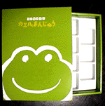

大王様に会うには、上の絵をクリック。奥に写真館があるぞ。 |
|
【過去の新聞】
|
|
【カエル速報】 1.カエルグッズ 2.カエルリンク 3.国家健全化計画 4.謎の髭男 5.とっくりくん 6.街頭で見た蛙 7.カエルグッズ店 |
| 大王様へのメール |
奉賛会推薦図書
フロッグマン |
購入情報が到着！饅頭の概要が判明
|
 |
わたしは、感激のあまり大切に袋に入れて持ち帰ろうとしたのだが、夕食を外食したときに、かえる饅頭の箱を入れた袋は、しっかりと忘れずに持ち帰ったのに、なんと現金とか預金通帳、お守りとかデジカメとかを入れた、一身同体状態にあった、かばんの方を置き忘れてしまった。
それほど、かえる饅頭の箱の入手は、鞄を忘れるほど巨大な感動であったということなのである。箱は緑色に塗られていて、「名古屋みやげ」と書かれていた。中身の現物も、店舗の案内などもまったくなく、箱には「青柳総本家」としか書いていないので、どんな、饅頭だったのか、まったく手がかりがない。
同僚の証言によると「子どもが食べたようだが、気が付いたときにはすでになかった。味はどうだったかと聞いたら、うまかったよ」ということなので、観光地にありがちな、げてものでまずい、といったなおざりな饅頭ではなさそうだ。
箱の内部から類推するに、饅頭の形状は、厚さ２センチ、縦８センチ、横７センチ。色はおそらく緑色をしていた外郎状の外皮に、餡がくるまれていた可能性が高い。名古屋名物ということから、外郎系饅頭の公算大である。
わたしは見た！かえる饅頭目撃情報届く
偉大なるＦ同志より、目撃情報が届いた。さすがインターネットだねい！【長島発=偉大なるＦ同志】私は長島スパーランドのホテル「ガーデンオリーブ」でかえるまんじゅうを発見し購入しました。味はたしかコケモモ味でういろうではなく普通のおまんじゅうでした。形はよく覚えていませんが、かえる色ではなかった気がします。青柳総本家は名古屋の有名なういろうやさんだと思います。参考になればと思いさっそくメールさせていただきました。ご褒美にかえるおみくじください。大吉おみくじを発行するなりー
奉賛会指定銘菓に選定
全国かえる奉賛会は、かえる饅頭を、指定銘菓に選定したので、お歳暮やお中元、ご贈答品にどうぞご利用ください。といっても店の所在地も電話番号もわからない。| 写真の説明＝上が、かえる饅頭の表題。緑地に白の文字で描かれた、かえるの絵は、けっこうかわいいぞ。こんな饅頭を発送する名古屋の人をいたく尊敬します。 |